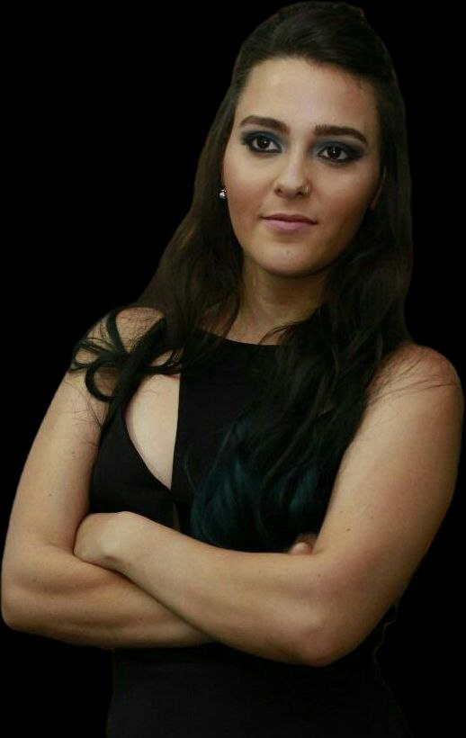
Aída P. GiozzaEffects of climate change on South American pit vipers
I study the effects of climate change on South American pit vipers through ecological niche modeling.
The BioDivA Lab is a decentralized and collaborative research network designed to transform how biodiversity science is produced, shared, and applied.
The lab connects researchers across institutions, countries, and career stages to co-develop projects in ecology, evolution, and conservation.
To promote a diverse, inclusive, and healthier scientific community, compromised with open, ethical, and transparent science production and the construction of a collaborative and transdisciplinary network to fight the complex challenges from the Anthropocene.
The Impacts of human activities on natural and human systems
→Science Governance and Diplomacy
→Ethnobiology and Society-Nature relationship: a transdisciplinary approach to environmental conservation
→This structure enables the integration of diverse expertise and perspectives while promoting scientific inclusivity, training, and equitable participation in research.
Better work and learning experiences
New research perspectives
Better opportunities for all people involved
Encouraging more people to work with science

Aída P. GiozzaEffects of climate change on South American pit vipers
I study the effects of climate change on South American pit vipers through ecological niche modeling.
•Undergraduate program in Biodiversity, Institute of Biosciences, Humanities and Exact Sciences, São Paulo State University (UNESP), São José do Rio Preto campus, SP, Brazil. Laboratory of Ecology and Evolution (LEEv), Butantan Institute, São Paulo, SP, Brazil.
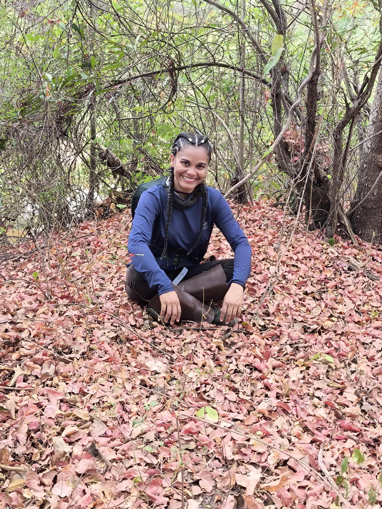
Ana Letícia dos Santos Lima Doutorando (phd student)Bees in urban areas: the landscape and its influence on community structure
To analyze the influence of the urban landscape on bee communities and on the structure of bee-plant interaction networks.
•Postgraduate program in ecology: theories, applications, and values; Biology Institute, Federal University of Bahia, Salvador, Bahia, Brazil.
•Bachelor's degree in Biological Sciences, Master's degree in Ecology and Evolution
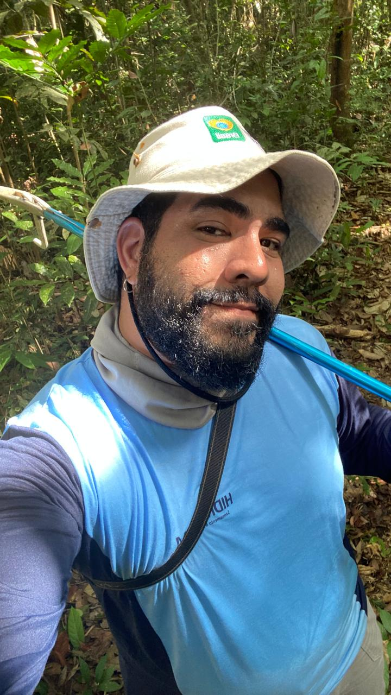
André NunesConservation Solutions for Herpetofauna in the Pan-Amazon: Climate Emergency and the Future of Species
This research proposes practical and integrated conservation solutions to protect pan-Amazonian herpetofauna biodiversity from environmental collapses caused by the climate crisis.
•Research Fellow (DTI-B/CNPq); Laboratory of Ecology and Conservation (LABECO), Biological Sciences Institute, Federal University of Pará (UFPA), Belém, Pará, Brazil
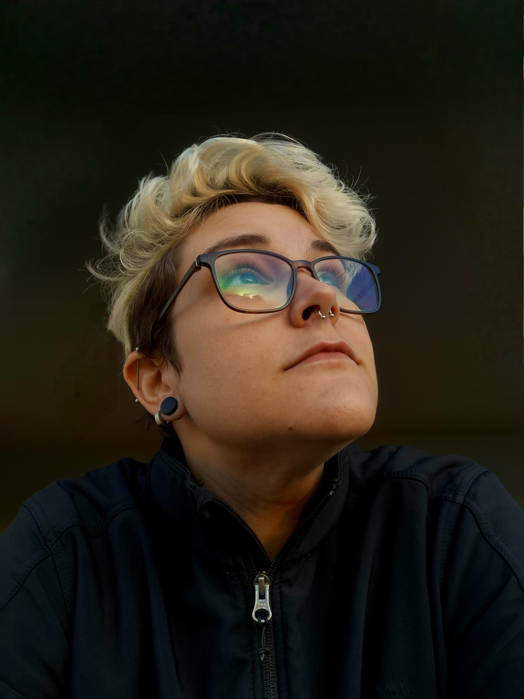
Beatriz Hörmanseder Collaborating researcherUses three-dimensional methodologies for research, curation, and digital preservation of geopaleontological heritage, integrating 3D technologies into science communication in Paleontology.
•Bachelor's degree in Biological Sciences
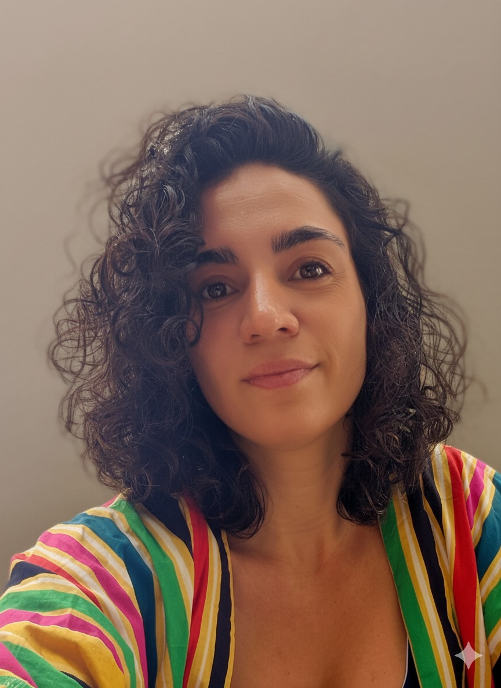
Camila Sant'Anna Collaborating researcher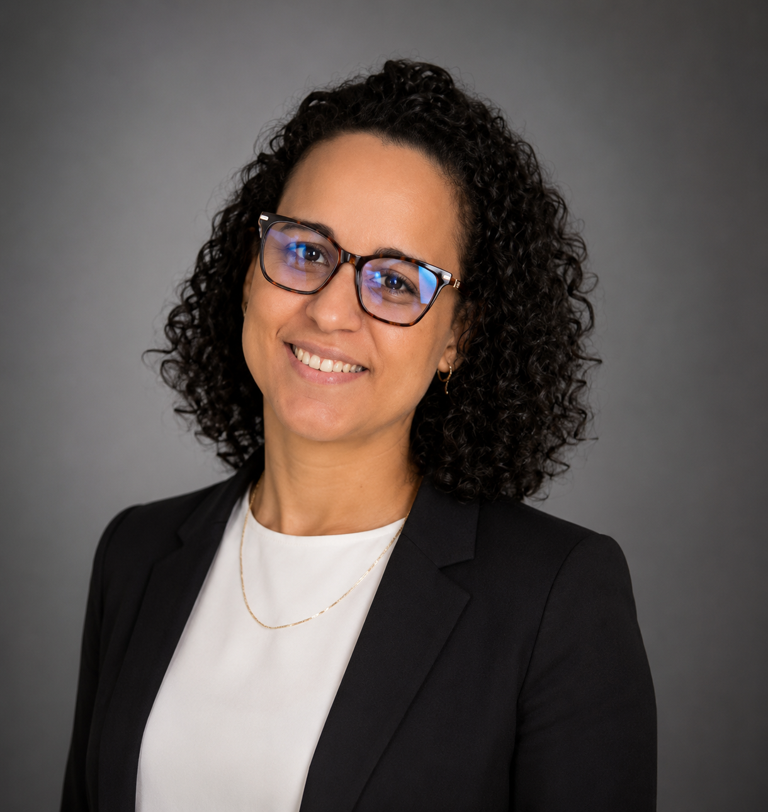
Caroline Tito Doutorando (phd student)Structure of solitary bee and wasp communities (Hymenoptera: Aculeata) nesting in pre-existing cavities, their functional groups and the properties of antagonistic relationships, characterizing this community along an urbanization gradient
To analyze how urbanization affects the structure, functions, and ecological relationships of solitary bee and wasp communities that use trap-nests.
•Postgraduate program in ecology: theories, applications, and values; Biology Institute, Federal University of Bahia, Salvador, Bahia, Brazil.
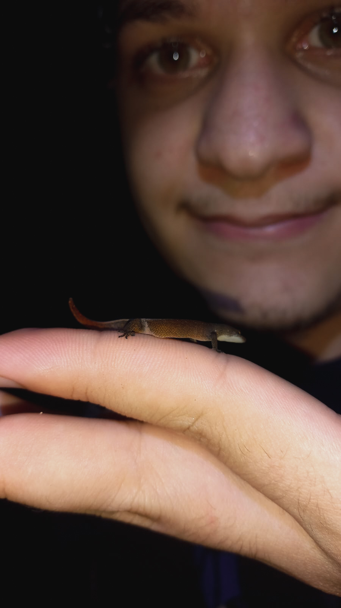
Charles Vinícius de Jesus Braga Collaborating researcher•Department of Biological Sciences, Santa Cruz State University, Ilhéus, Bahia, Brazil.
•Undergraduate student in Biological Sciences (in progress)
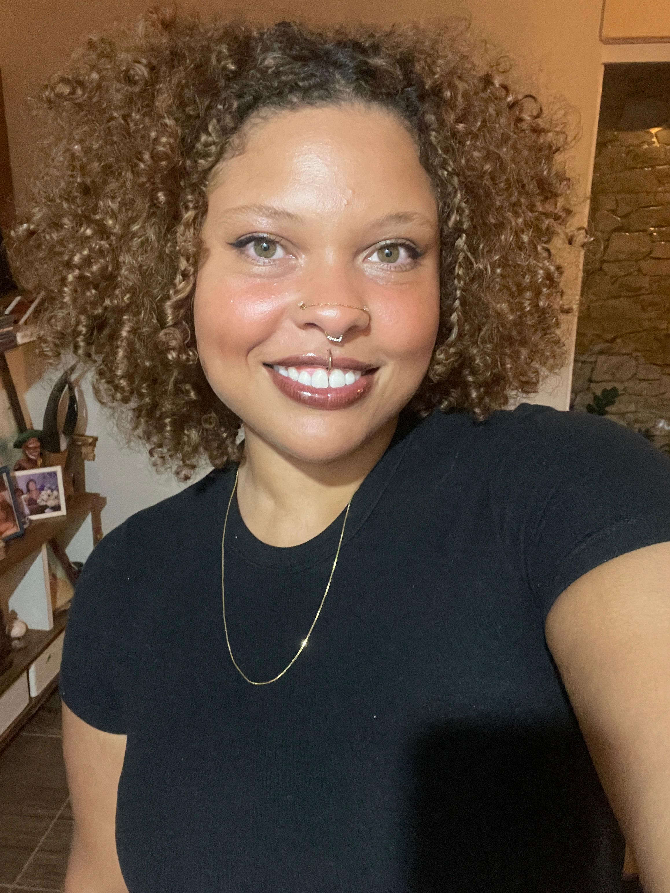
Damares Soares Doutorando (phd student)Impact of climate change on Atlantic Forest birds of prey: refuge, migration, and predation
How climate change impacts, or may impact, birds of prey.
•Postgraduate program in ecology: theories, applications, and values; Biology Institute, Federal University of Bahia, Salvador, Bahia, Brazil.
•Biological Sciences
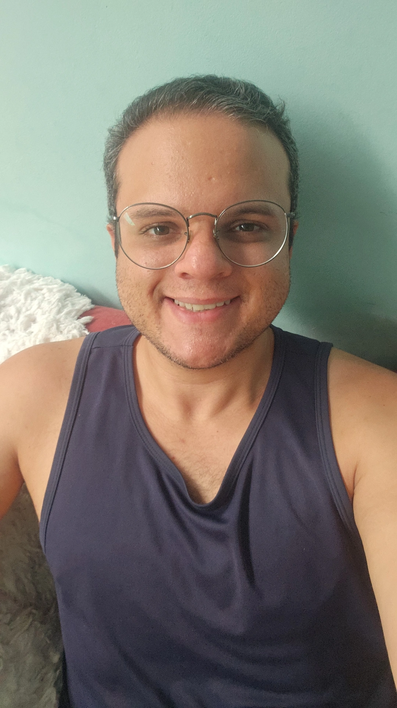
Denis Bruno Santos Marques Nunes Collaborating researcher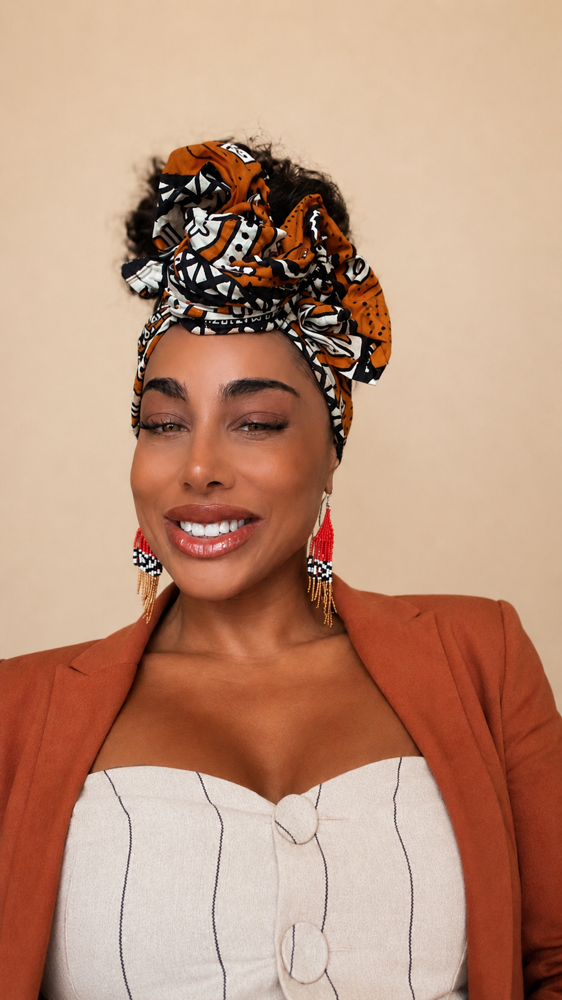
Fabíola Vieira Doutorando (phd student)Viral zoonotic potential in bats from the Belo Horizonte Zoonosis Control Center and Maxakali cosmoperception: intersections among One Health, conservation, and ethnozoology
My research focuses on the interfaces between One Health, conservation, and ethnozoology, exploring the relationships between bats, the Maxakali people, and society at large.
•Postgraduate Program in Animal Science; School of Veterinary Medicine, Federal University of Minas Gerais (UFMG), Belo Horizonte, Minas Gerais, Brazil. Research focus: One Health and conservation, Indigenous communities, and Chiroptera.
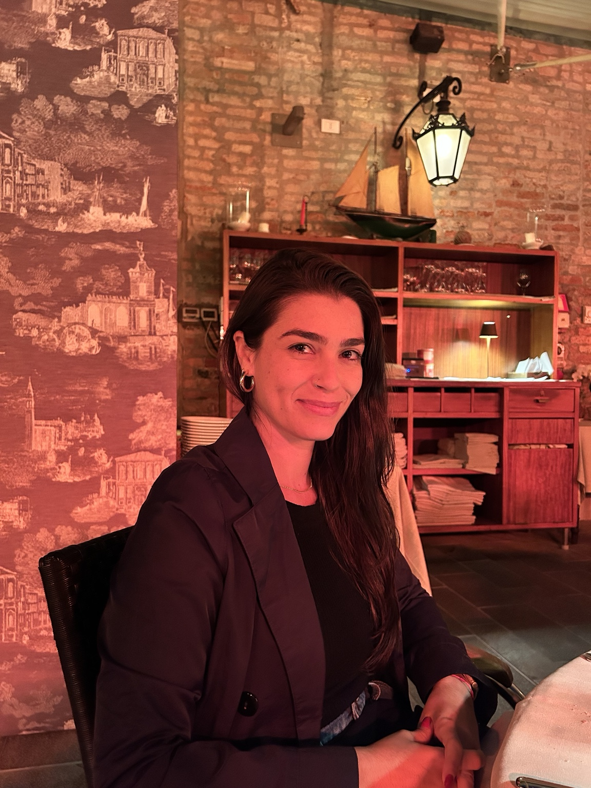
Fernanda Melo Gomes Pesquisador(a) de pós-doutorado (postdoctoral scholar)Ethnobotany of traditional communities in Brazil: strategies facing climate change from the perspective of basic education
My research investigates the ethnobotanical knowledge and practices of traditional communities, seeking to understand their relationships with biodiversity and climate change and to contribute to their appreciation within basic education.
•Postdoctoral Researcher in Ethnobotany; Biology Institute, Federal University of Bahia, Salvador, Bahia, Brazil.
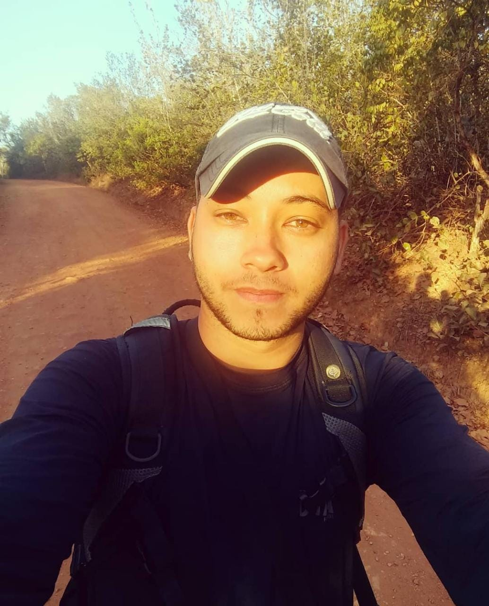
Hugo Andrade Pesquisador(a) de pós-doutorado (postdoctoral scholar)Too hot to hop: thermal ecophysiology of amphibians under climate change scenarios
I seek to understand the determining factors for the occurrence and distribution of reptiles across different scales and climate scenarios.
•Junior Postdoctoral Researcher, Federal University of Sergipe, Sergipe, Brazil.
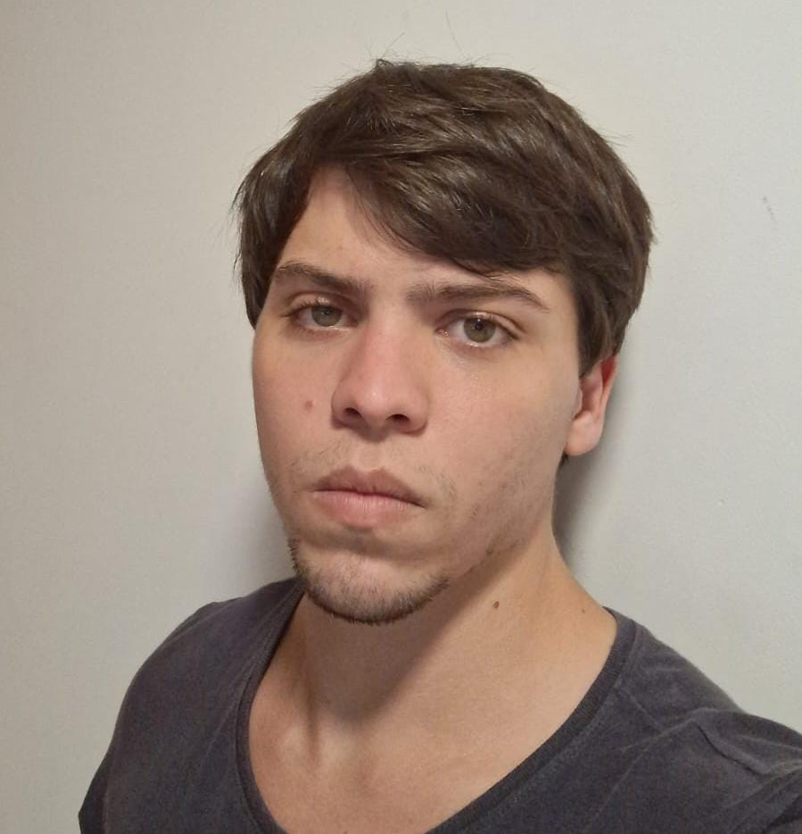
João Pedro Ramos Couto IC (undergraduate research)Routes and Refuges: Predicting the Future of Shorebirds under Climate Change
To define climatic refuges for migratory shorebirds through niche modeling.
•Undergraduate student in Biology Teaching; Biology Institute, Federal University of Bahia, Salvador, Bahia, Brazil.
•Undergraduate student in Biology Teaching
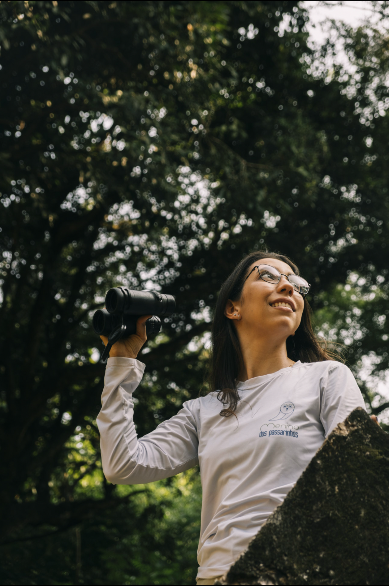
Juliana Moraes phd studentEffects of climate changes on migratory birds
My research aims to understand how different environmental pressures affect the physiology, ecology, and survival of migratory birds in their various biological aspects.
•Postgraduate program in ecology: theories, applications, and values; Biology Institute, Federal University of Bahia, Salvador, Bahia, Brazil | Visitor researcher, Ruđer Bošković Institut, Zagreb, Croatia
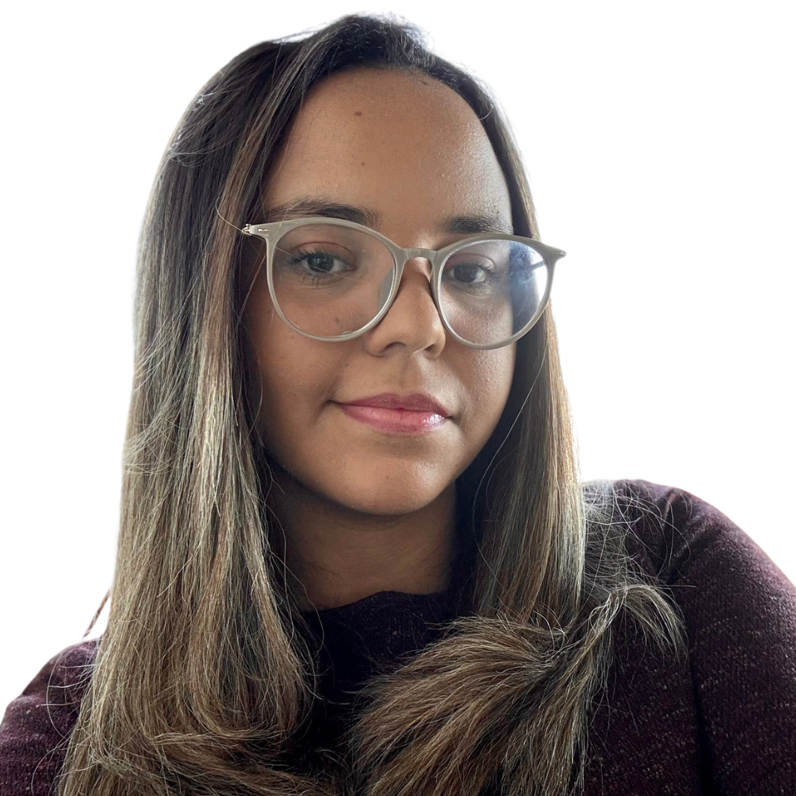
Karen Nascimento Collaborating researcherThe cost of life beneath the surface: ecophysiology and ecological niche modeling of amphisbaenians (Squamata: Amphisbaenia) under future climate change
To understand the possible impacts of climate change on neotropical fossorial herpetofauna.
•Undergraduate student in Biological Sciences; Institute of Biological and Health Sciences, Federal University of Alagoas, Maceió, Alagoas, Brazil.
•Bachelor's degree in Biological Sciences
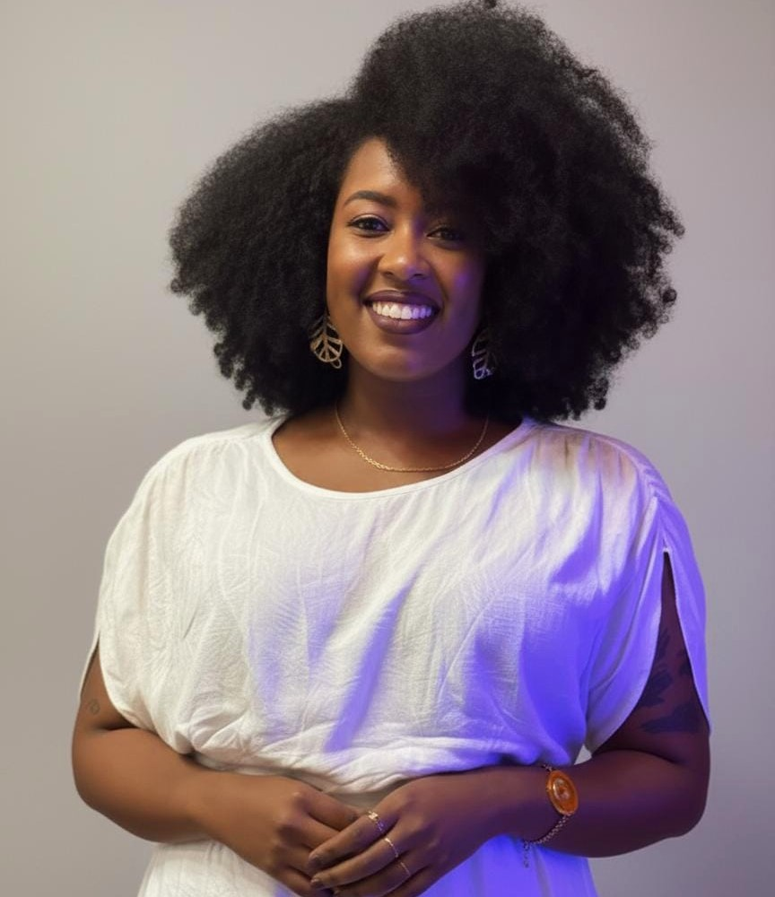
Lavínia Conceição Ribeiro Collaborating researcherImpact of Wind Farm Installation on Herpetofauna: Community Analysis in Caatinga Environments in Northeastern Brazil.
To investigate the impacts of wind farm installation on the structure and composition of the lizard community in the Caatinga.
•Licensed in Biological Sciences and undergraduate student in Biological Sciences at the Federal University of Bahia (UFBA). Collaborator at the Laboratory of (Bio)diversity in the Anthropocene (BioDIVA), Biology Institute, Federal University of Bahia, Salvador, Bahia, Brazil.
•Licensed in Biological Sciences from the Federal University of Bahia.
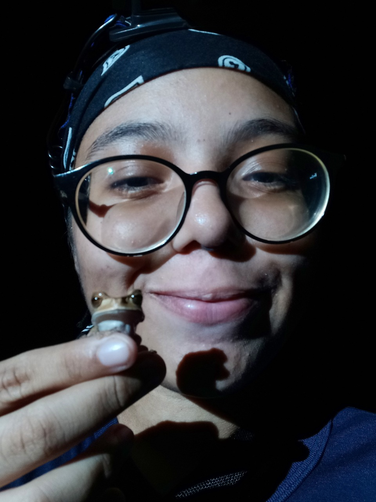
Lucca Izaguirres Souza Collaborating researcher•Bachelor's degree in Biological Sciences - Santa Cruz State University, Ilhéus, Bahia, Brazil.
•Undergraduate student in Biological Sciences
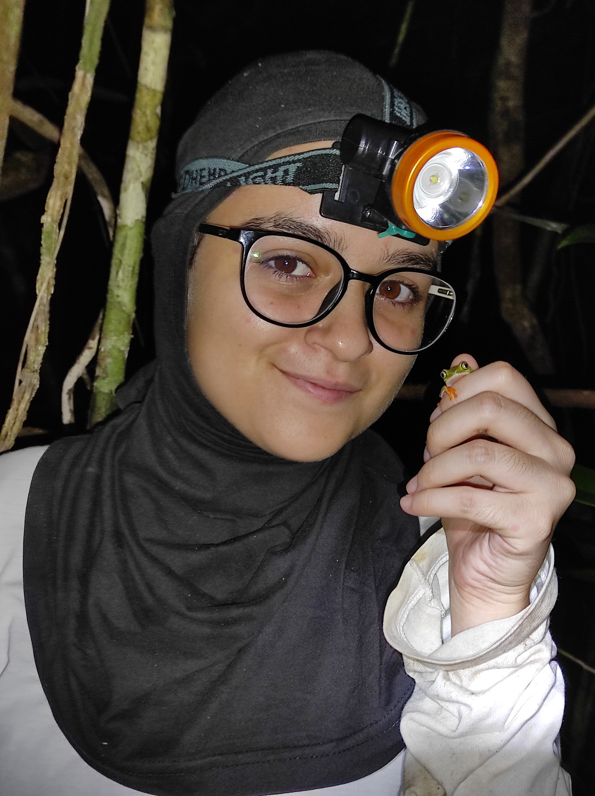
Marcelle Heliópolis Collaborating researcherThe impacts of climate change on the ecophysiology of anuran species of the Atlantic Forest in Alagoas, Brazil
To investigate the impact of average temperatures on anurans of the Atlantic Forest in the Pernambuco Endemism Center.
•Bachelor's degree in Biological Sciences, Institute of Biological and Health Sciences, Federal University of Alagoas, Maceió, Alagoas, Brazil
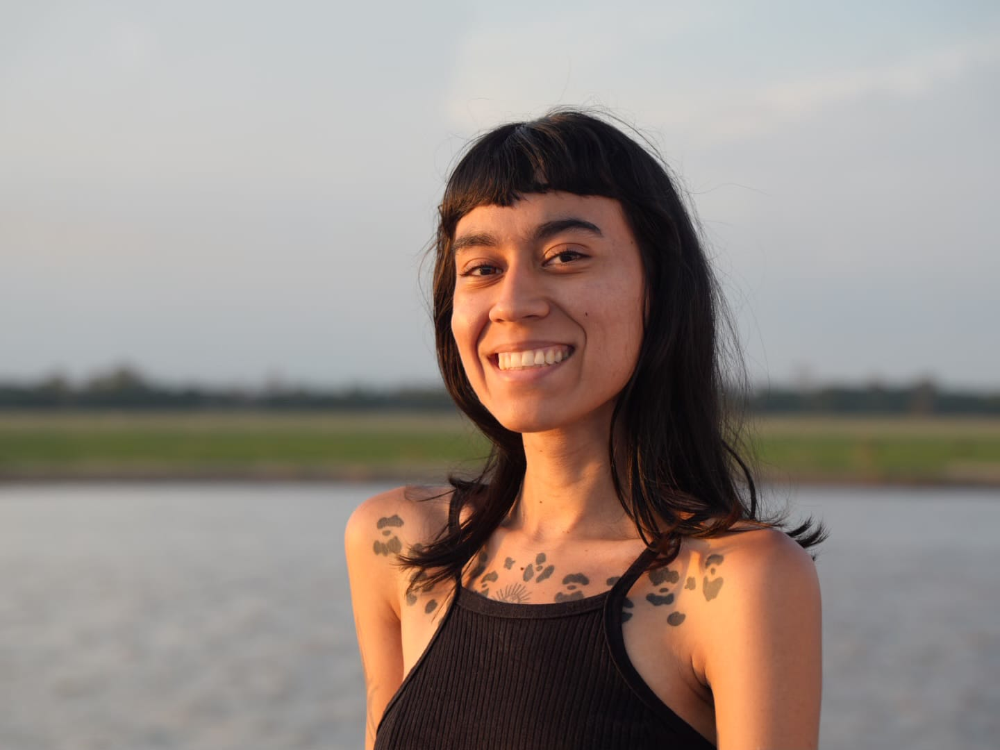
Maria Amazonas MuraThe formative process of healing specialists among peoples undergoing ethnic resurgence in the Lower Tapajós region
Understanding the formation of healing specialists in Indigenous communities.
•Postgraduate program in anthropology; Faculty of Philosophy and Human Sciences at UFBA, Federal University of Bahia, Salvador, Bahia, Brazil.
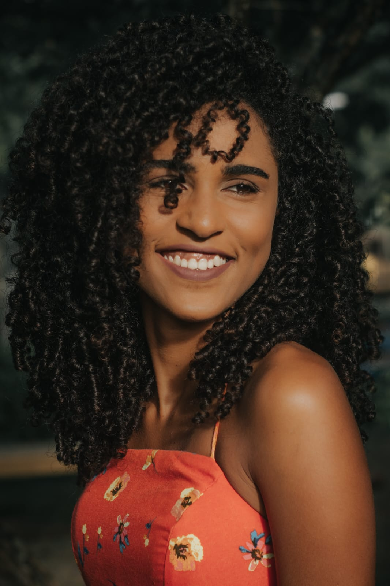
Marina Sunshine Souza Lobo dos Santos Mestrando (masters student)Phylogenetic and therapeutic patterns of medicinal plants used by traditional Brazilian communities: A systematic review
•Postgraduate program in ecology: theories, applications, and values; Biology Institute, Federal University of Bahia, Salvador, Bahia, Brazil.
•Biologist
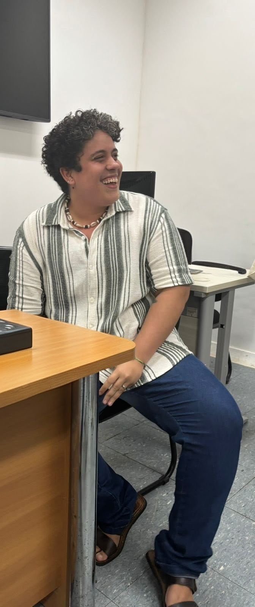
Murillo Medeiros Carvalho Collaborating researcherMapping trans strategies for the climate crisis
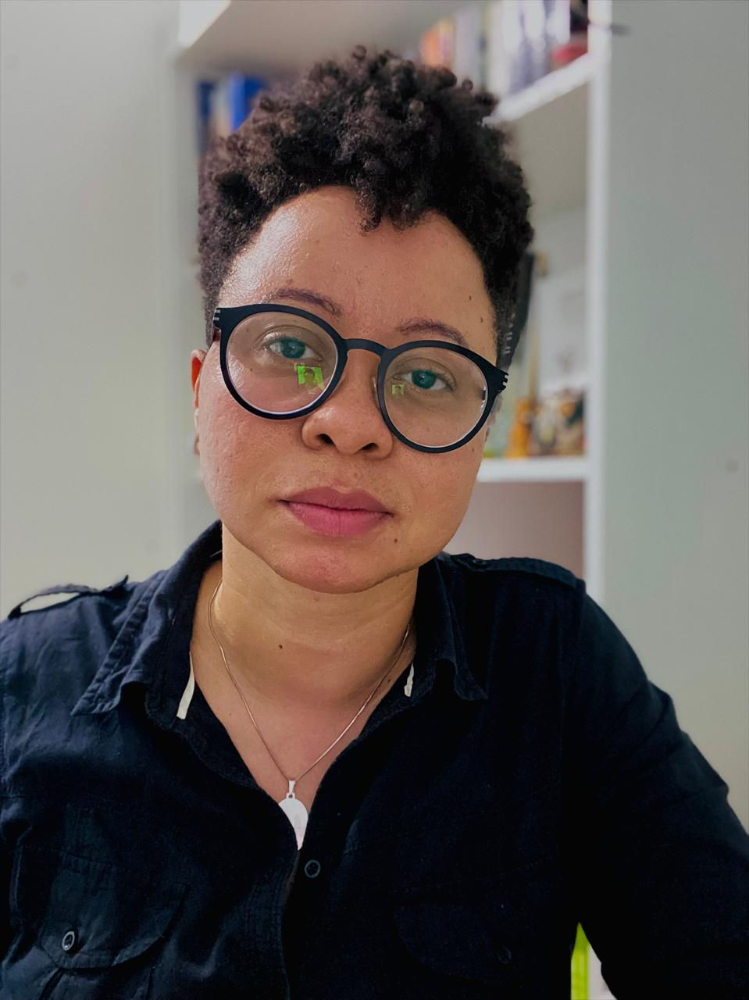
Nolga Eliã Mestrando (masters student)Potential of mammal functional diversity as an indicator of ecological integrity in Atlantic Forest fragments in southern Bahia.
To assess the potential of medium and large mammal functional diversity as an indicator of ecological integrity, examining whether it varies with proximity to protected areas, habitat structure, and carbon stock, in Atlantic Forest fragments of southern Bahia.
•Postgraduate program in ecology: theories, applications, and values; Biology Institute, Federal University of Bahia, Salvador, Bahia, Brazil.
•Bachelor's degree in Biological Sciences
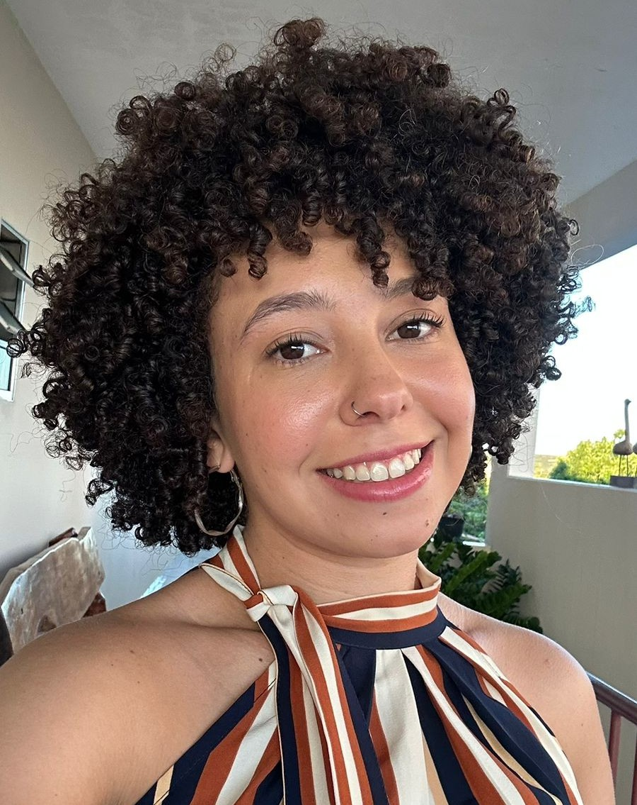
Patrícia Neves Pereira Collaborating researcher•Basic Education Teacher at the Wilson David Domingues Municipal Educational Center and at the Zuleide Freire de Abreu State Full-Time School, Jacaraci, Bahia, Brazil.
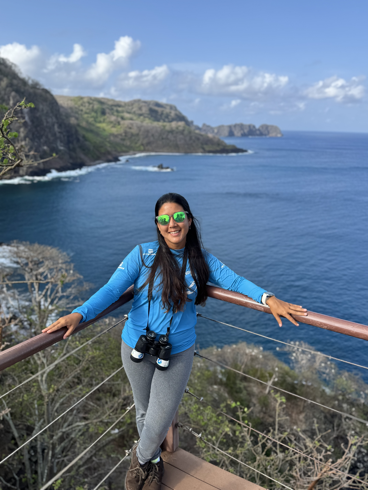
Rafaela da Silva LampaParental behavior of spinner dolphins from the Fernando de Noronha Archipelago, PE, Brazil.
To investigate the mother-calf behavioral repertoire in the spinner dolphin population of Fernando de Noronha, Brazil.
•Postgraduate program in ecology: theories, applications, and values; Biology Institute, Federal University of Bahia, Salvador, Bahia, Brazil.
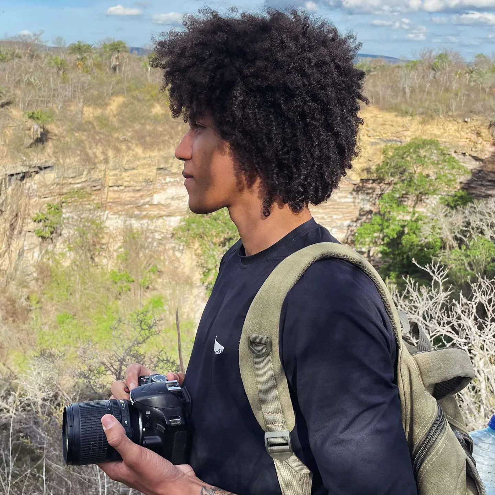
Ricardo Santos Magalhães Mestrando (masters student)Thermal physiology and impacts of climate change on populations of Corallus hortulana Linnaeus, 1758 (Squamata: Boidae) across different biomes.
My research aims to investigate the effects of climate change on an arboreal boa species.
•Postgraduate program in ecology: theories, applications, and values; Biology Institute, Federal University of Bahia, Salvador, Bahia, Brazil.
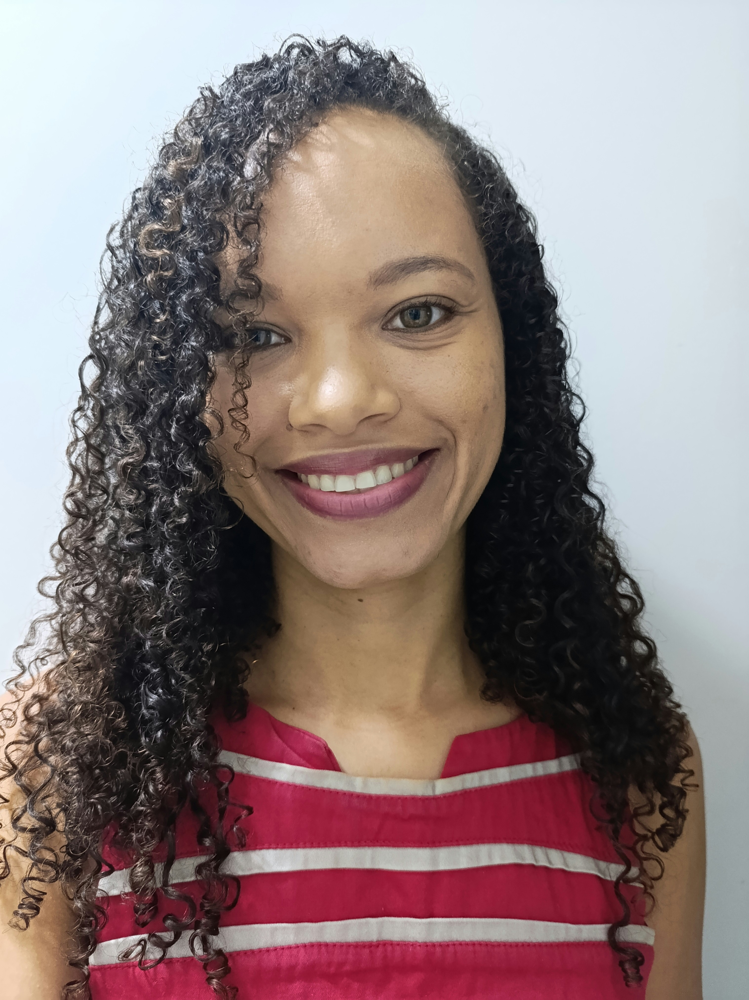
Silvana Silva dos SantosGlobal impacts of Sonneratia apetala (Lythraceae) invasion and the threat to Brazilian mangroves
To research the ecological effects of the invasive behavior of S. apetala in mangroves around the world and in Brazil.
•Postgraduate program in ecology: Application, Theory, and Values; Biology Institute, Federal University of Bahia
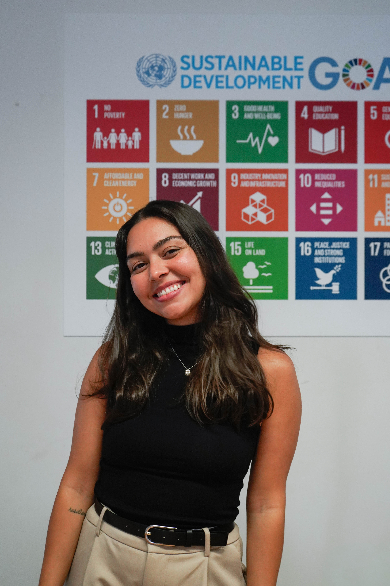
Thamyres da Costa Freitas Doutorando (phd student)Ethnospecies and carbon sequestration: an ecological approach to climate change mitigation
To assess the contribution of ethnospecies in future emissions scenarios and to consolidate strategies for protecting and strengthening their role in combating climate change.
•PhD in Climate Change and Sustainable Development Policies; Faculty of Sciences, University of Lisbon, Lisbon, Portugal.
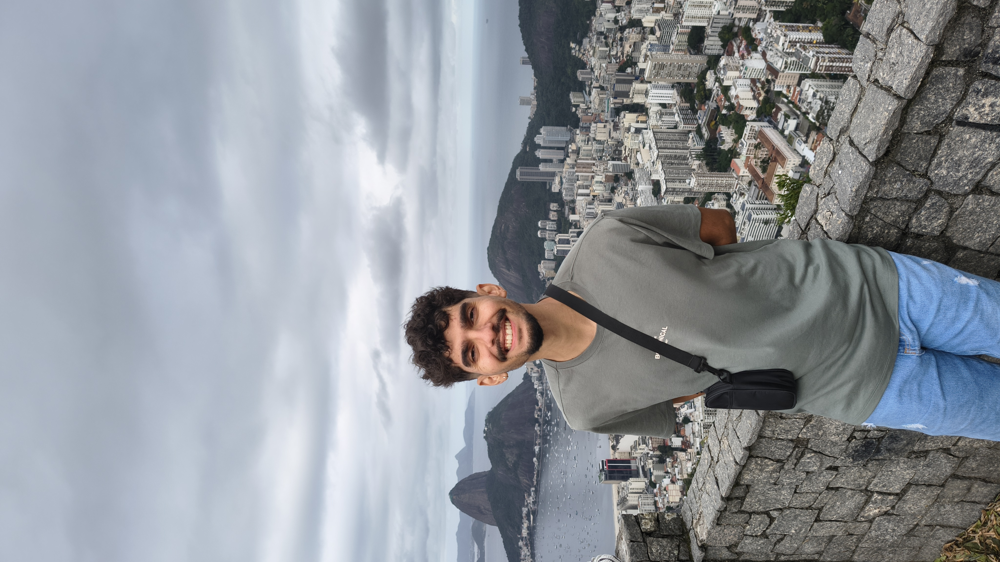
Thieres Almeida Collaborating researcherComputational tools for the conservation and restoration of the Caatinga
To develop and apply computational tools and diverse data in innovative ways to solve conservation and restoration problems in the Caatinga.
•Postgraduate program in ecology and conservation; Universidade Federal de Sergipe, São Cristóvão, Sergipe, Brazil
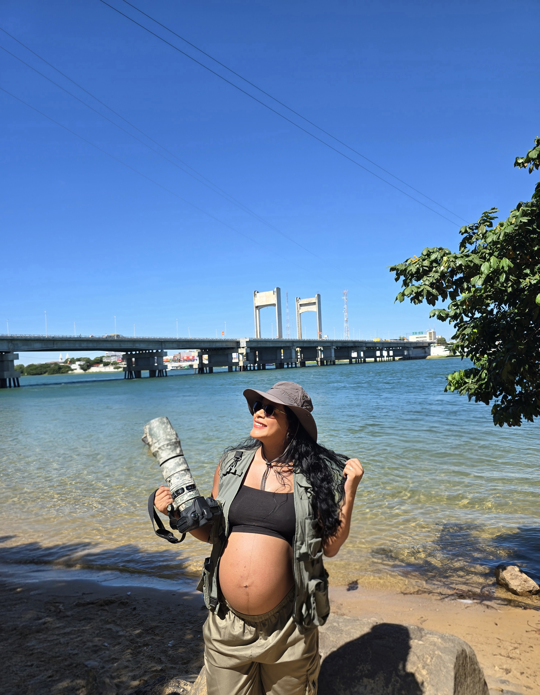
Vitória Ribeiro Doutorando (phd student)Effectiveness of protected areas in safeguarding threatened parrots in Brazil
To assess the protective potential that protected areas offer to Brazilian parrot species threatened with extinction, and to determine which environmental factors shape their past, current, and future distribution.
•Graduate student in the Legal Amazon Biodiversity and Biotechnology Network (Bionorte) at the Maranhão State University, São Luís, Maranhão, Brazil.
•Biological Sciences
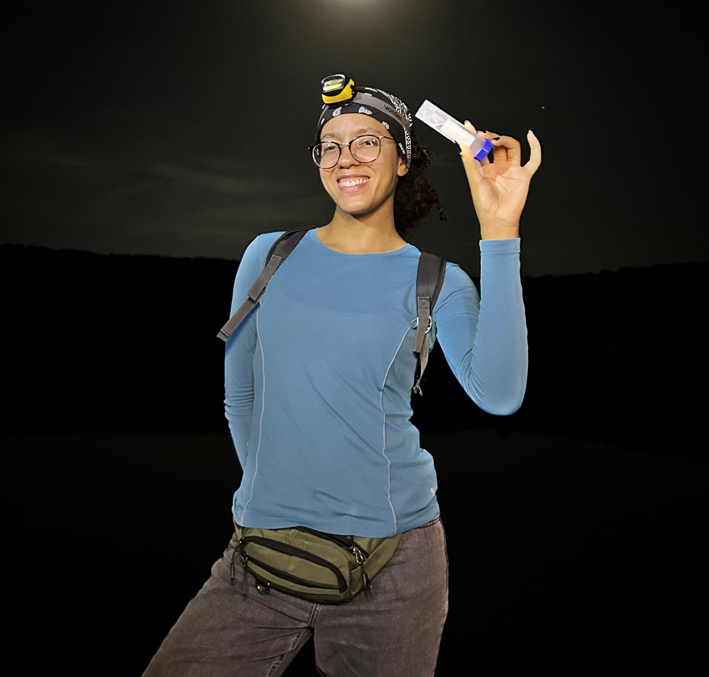
Laís Dória IC (undergraduate research)•Undergraduate student in Biological Sciences at the Federal University of Bahia, Salvador, Bahia, Brazil
•Undergraduate student in Biological Sciences - Bachelor's degree
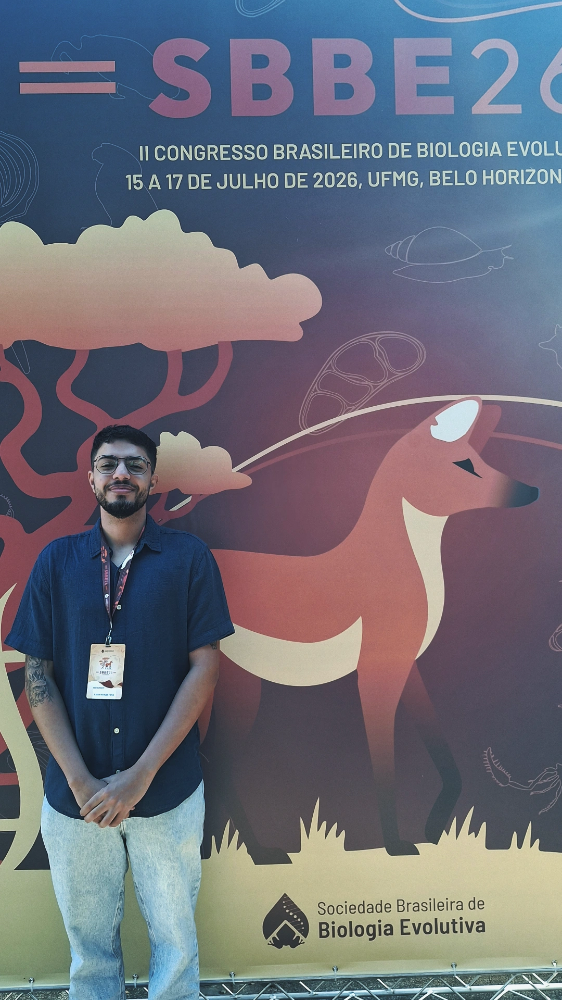
Lucas Araújo Faria IC (undergraduate research)Climate Impact on Mangrove Plants: a systematic review
A systematic review of climate impacts on selected mangrove plant genera.
•Bachelor's degree in Biological Sciences; Institute of Biology, Federal University of Bahia, Salvador, Bahia, Brazil
•First academic degree
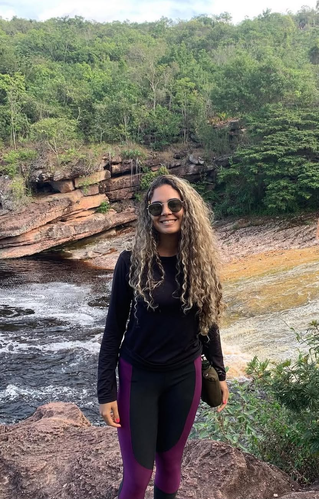
Beatriz de Jesus Garcia Collaborating researcherEcological niche modeling for Diphylla ecaudata in the Atlantic Forest under climate change scenarios.
•Undergraduate student in Biological Sciences - UFBA
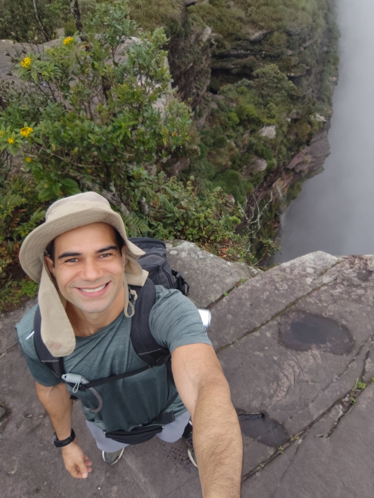
Daniel Araujo Collaborating researcherImpact of noise caused by wind farms on wildlife and humans.
•Renova Mundo Soluções Ambientais
•Biology
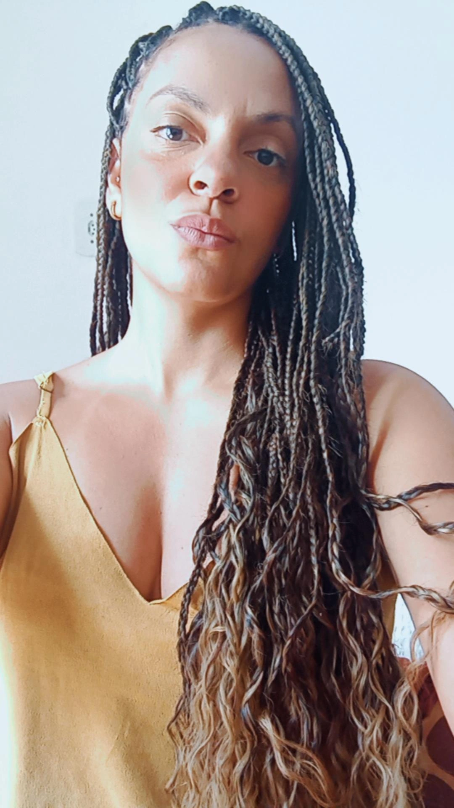
Lana Resende de Almeida Collaborating researcherAncestral and contemporary ethnozoology of anurans: past and future for conservation.
To use ethnozoology, through the different human relationships with anurans, as a way to raise awareness and encourage anuran conservation.
•Teaching degree in Biological Sciences; Biology Institute, Federal University of Bahia, Salvador, Bahia, Brazil.
•Biology
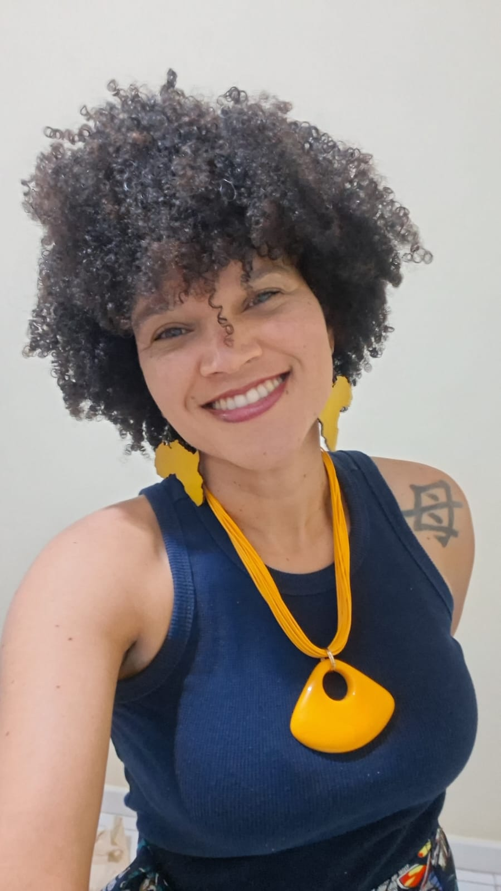
Helena Rachel da Mota Araujo Collaborating researcher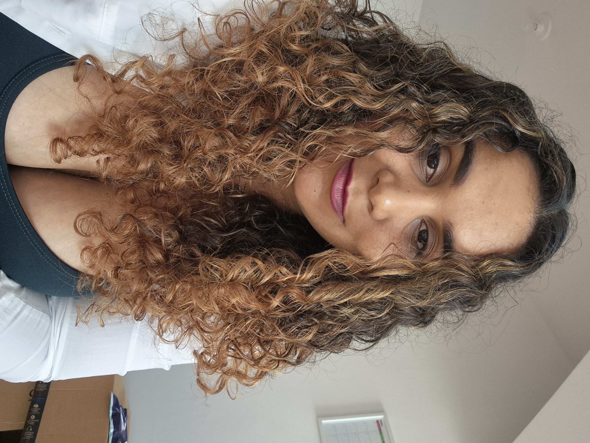
Soliene Teixeira dos Santos IC (undergraduate research)•Undergraduate program in general biology: Biology Institute, Federal University of Bahia, Salvador, Bahia, Brazil.
•Teaching degree in Biological Sciences
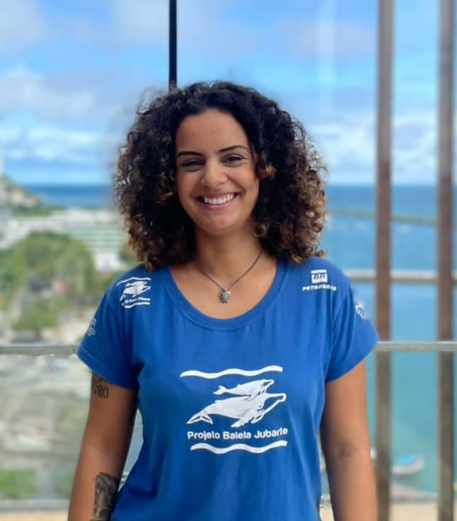
Géssica F. Assis IC (undergraduate research)•Bachelor's degree in Biological Sciences; Biology Institute, Federal University of Bahia, Salvador, Bahia, Brazil.
•Biological Sciences - UFBA (in progress)
The inclusion of trans people in advertising campaigns: production of meaning, symbolic power, and the limits of representation in Brazilian advertising
To analyze the representation of transgender people in Brazilian advertising campaigns and understand how this representation has contributed to shaping social perceptions of this population, as well as to processes of exclusion and marginalization.
•Postgraduate Program in Communication (PPGCOM), Rio de Janeiro State University (UERJ). Research areas: gender, representation, transgender identities, media, and advertising. Rio de Janeiro, Rio de Janeiro, Brazil.
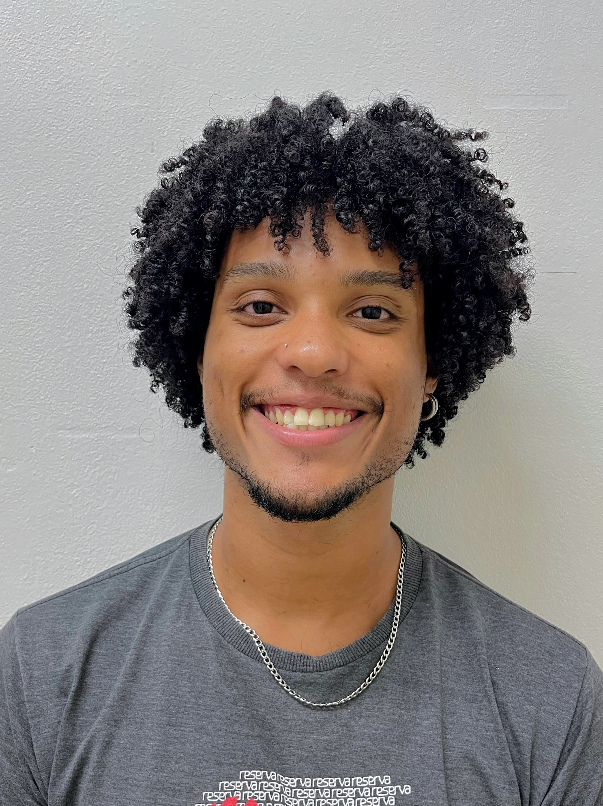
Deivide Almeida dos Santos IC (undergraduate research)Climate Impact on Mangrove Plants: a Systematic Review
To assess, through a systematic literature review, the impacts of climate change on mangrove plants, synthesizing the available scientific evidence.
•Undergraduate student in Biological Sciences; Biology Institute, Federal University of Bahia, Salvador, Bahia, Brazil.
•Biological Sciences
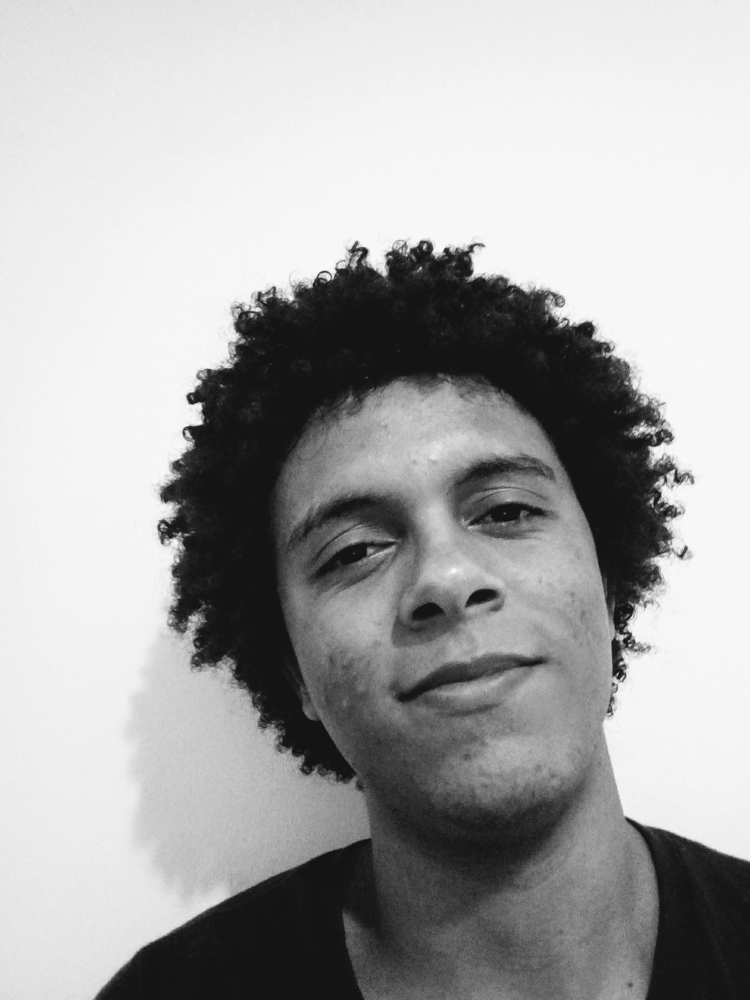
Matheus Augusto de Azevedo IC (undergraduate research)Ethnobotany on Social Media: Indigenous Peoples from Bahia in Action
My research aims to understand which Indigenous communities in Bahia share their knowledge about plants on the internet, and which plants these are.
•Federal University of Bahia
•Bachelor's degree in Biological Sciences from the Federal University of Bahia
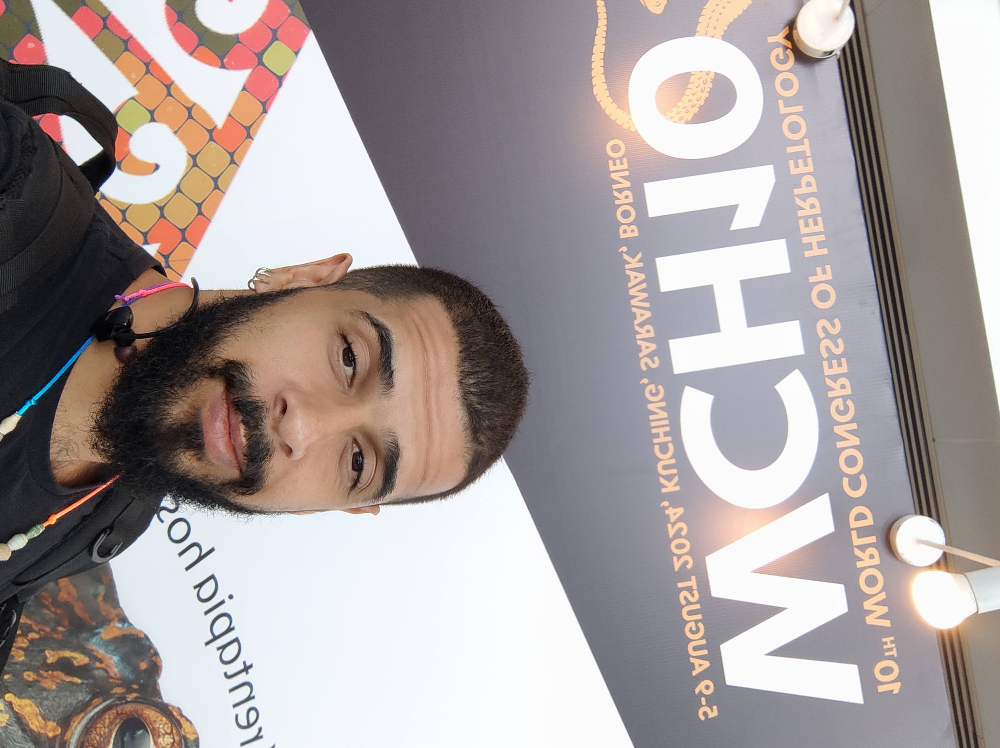
Mateus Santos Doutorando (phd student)Between resilience and extinction: Ecophysiology and tolerance limits of Caatinga Tropiduridae.
My research aims to predict the future effects of global warming on the Caatinga by analyzing climate change impacts on tropidurid lizards in this morphoclimatic domain.
•Postgraduate program in ecology and conservation; Department of Biology, Federal University of Sergipe, São Cristóvão, Sergipe, Brazil.
•Degree in Biological Sciences
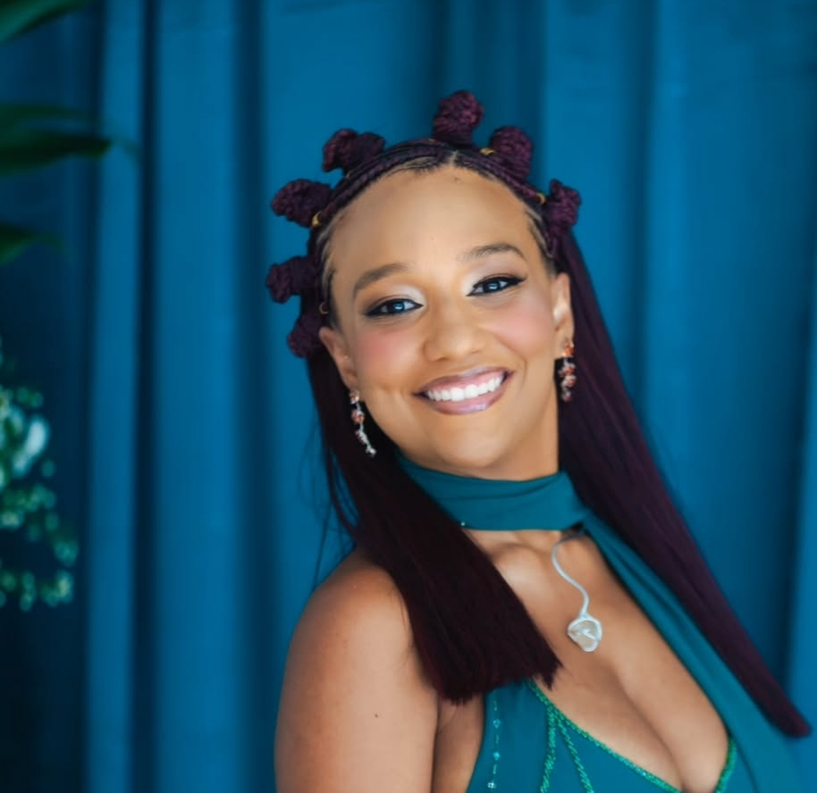
Maria Eduarda Curie Menezes Melo Collaborating researcher•Waiting for the Ecotav process to open in order to enroll in the master's program and become a graduate advisee
•Teaching degree in Biology
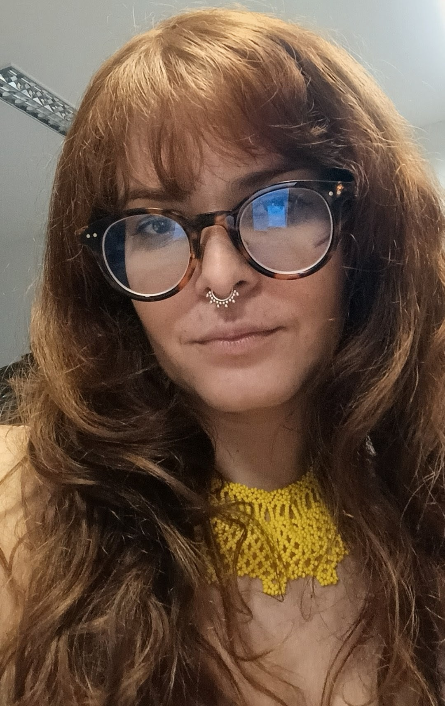
Thame Ferreira Mestrando (masters student)The Museum of Ceará Culture and ecology: toward an eco-art-educational approach.
The research investigates, through an ecosophical articulation between ecology, art, culture, and museum education, how eco-art-education emerged from a pragmatic experience through the Educational Center linked to the Museum of Ceará Culture (Fortaleza, Ceará).
•Postgraduate program in ecology: theories, application, and values; Biology Institute, Federal University of Bahia, Salvador, Brazil.
•Bachelor's degree in Biological Sciences
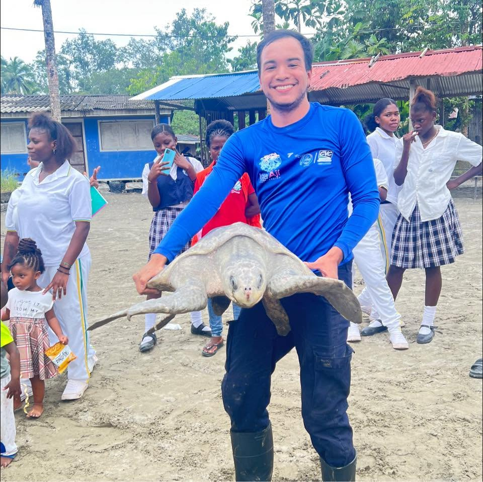
Andres Felipe Arana Aguilar Mestrando (masters student)Tissue extraction protocol for sea turtle hatchlings
This research aims to standardize an efficient and minimally invasive protocol for collecting biological tissue samples from sea turtle hatchlings, ensuring sample integrity for laboratory analyses and the safety of the specimens.
•Postgraduate program in zoology; State University of Santa Cruz, Ilhéus, Bahia, Brazil.
•Bachelor of Science - Universidad del Valle
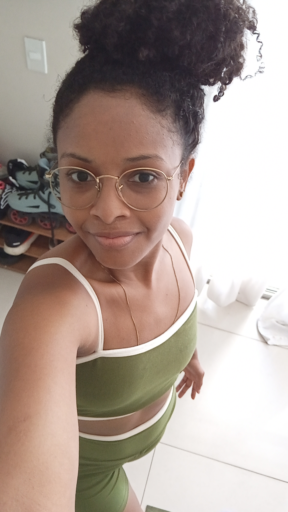
Ju Neres Doutorando (phd student)Assessment of chlorophyll levels in the mangroves of Baía de Todos os Santos: an environmental diagnosis
To assess mangrove health using in situ data and satellite imagery.
•Postgraduate program in ecology: theories, applications, and values; Biology Institute, Federal University of Bahia, Salvador, Bahia, Brazil.
•Teaching degree in Biology
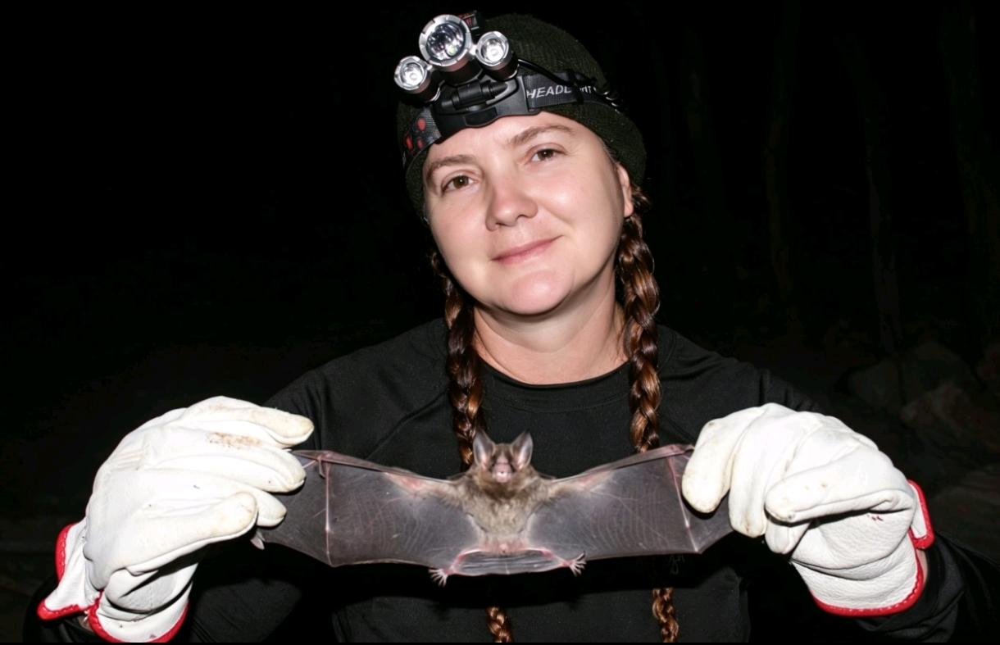
Maria Nogueira Mestrando (masters student)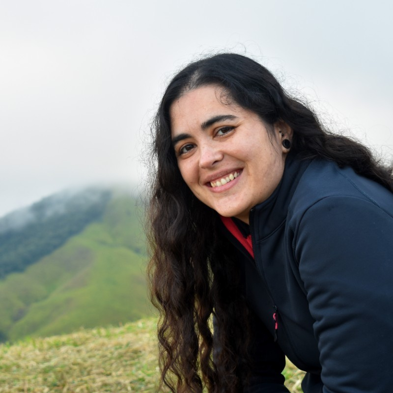
Iris Amati Martins Collaborating researcher•Collaborating Researcher on the project "What Can Soundscapes Reveal About Biodiversity?"; Center for Natural and Human Sciences, Federal University of ABC, São Paulo, Brazil
•PhD and Master's in Ecology of Aquatic and Terrestrial Ecosystems from USP, and Bachelor's degree in Biological Sciences from UNESP
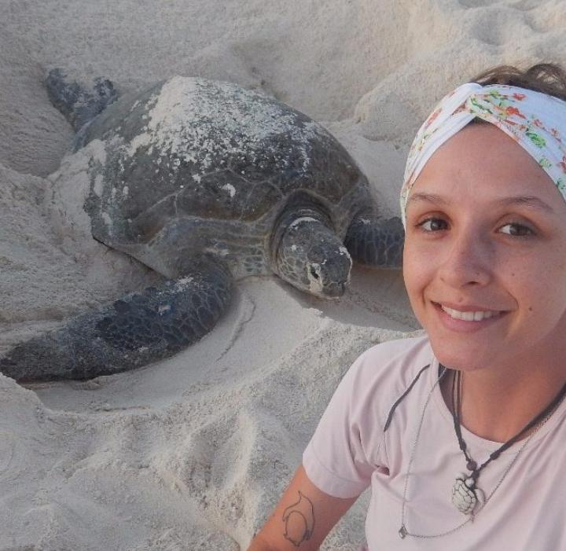
Karoline Agostinho Pesquisador(a) de pós-doutorado (postdoctoral scholar)Artisanal fishing and Climate Change: sustainability of the activity integrated with the Blue Economy and Ocean Literacy on the coast of Espírito Santo
The proposal investigates the socioeconomic and sociocultural challenges of artisanal fishing in Espírito Santo in the face of coastal uses, climate change, and public policy failures, seeking to integrate traditional knowledge, Ocean Literacy, and the Blue Economy to support actions that ensure the activity's continuity.
•Postdoctoral researcher in the Graduate Program in Environmental Oceanography - Federal University of Espírito Santo; Human Ecology of the Ocean Research Group
•Biological Sciences
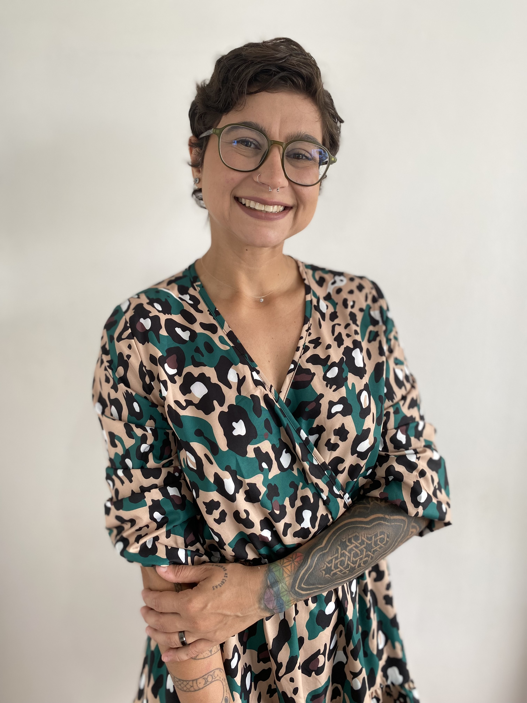
Biologist and researcher in ecology, conservation and biodiversity in the Anthropocene, and an advocate for open, inclusive and diverse science. She founded and coordinates the BioDiVa Lab and its collaborative research network.
View Lattes CV ↗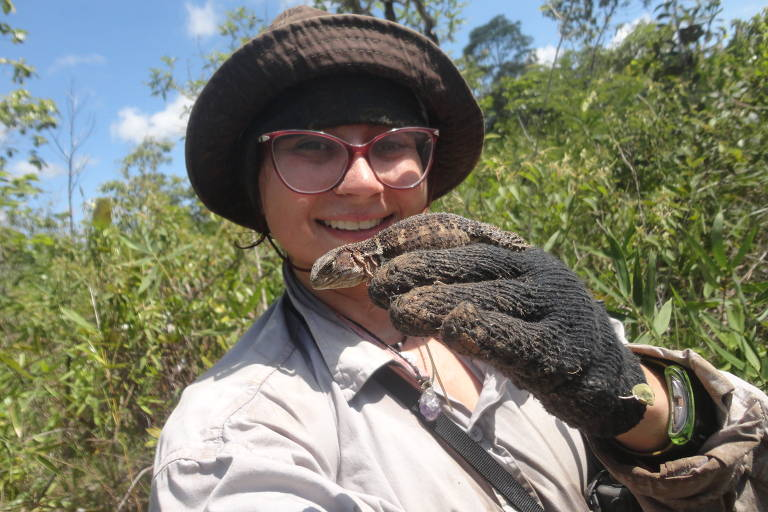